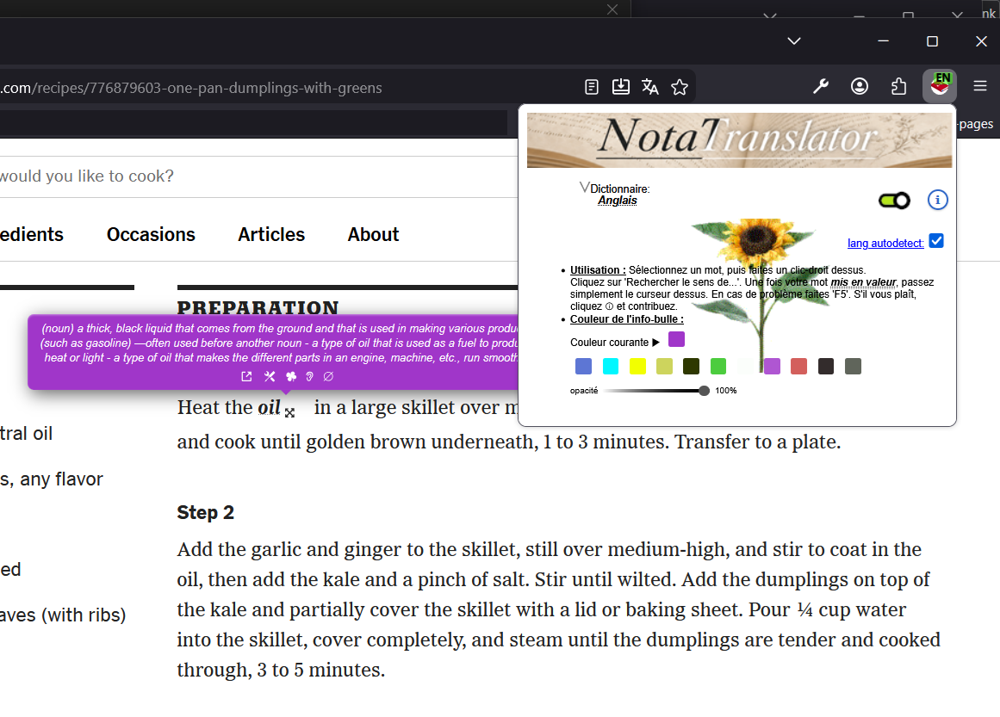
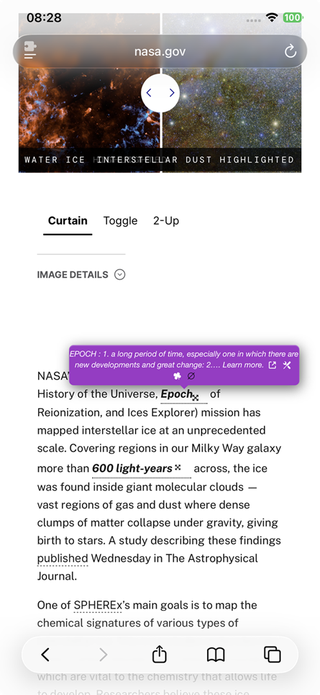

Read first. Translate later.
Keep the definition inside the page, in the language that owns the word.
Not A Translator injects lightweight tooltips (noun) floating definition boxes that stay close to the selection and can rotate around it to escape edges and overlap. near your selection, keep the original-language definition front and center, and hide a lot of technical work behind a very simple gesture.
In context
The extension is meant to live inside real reading situations.
A desktop Firefox view and a mobile Safari development view help make that concrete.


Why it feels different
Not a translator-first workflow. A reading-first workflow.
The site now makes that philosophy explicit instead of hiding it between technical notes.
Core features
Simple in use, technical in the background.
The visible interaction is tiny. The invisible machinery is not.
Recent improvements
Latest work now reflected on the extension site.
The landing page now describes the current state of the project instead of an older snapshot.
Under the hood
Much more happens than the interface lets on.
The extension is intentionally light in appearance and busy in the background.
Usage
A short gesture, not a study workflow.
The extension tries hard not to interrupt reading.
Dictionaries
FAQ